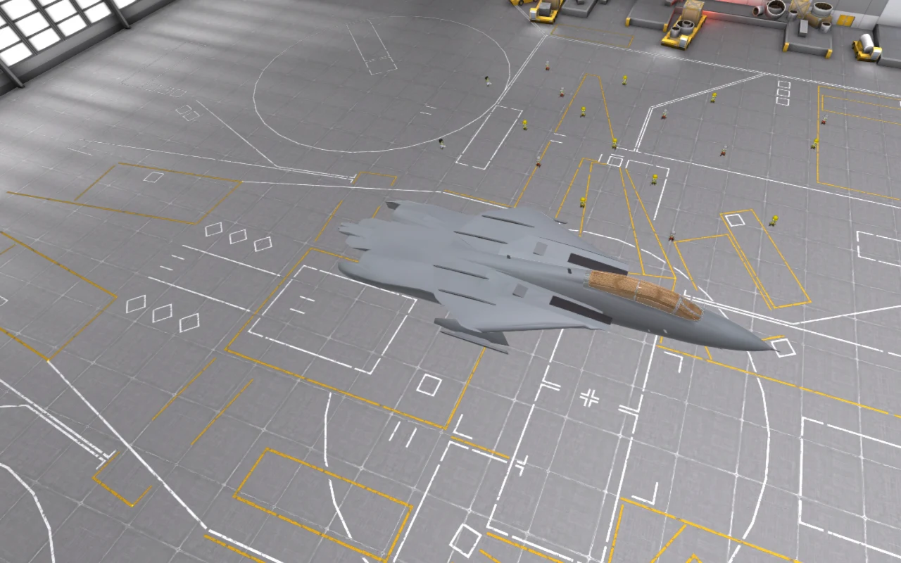
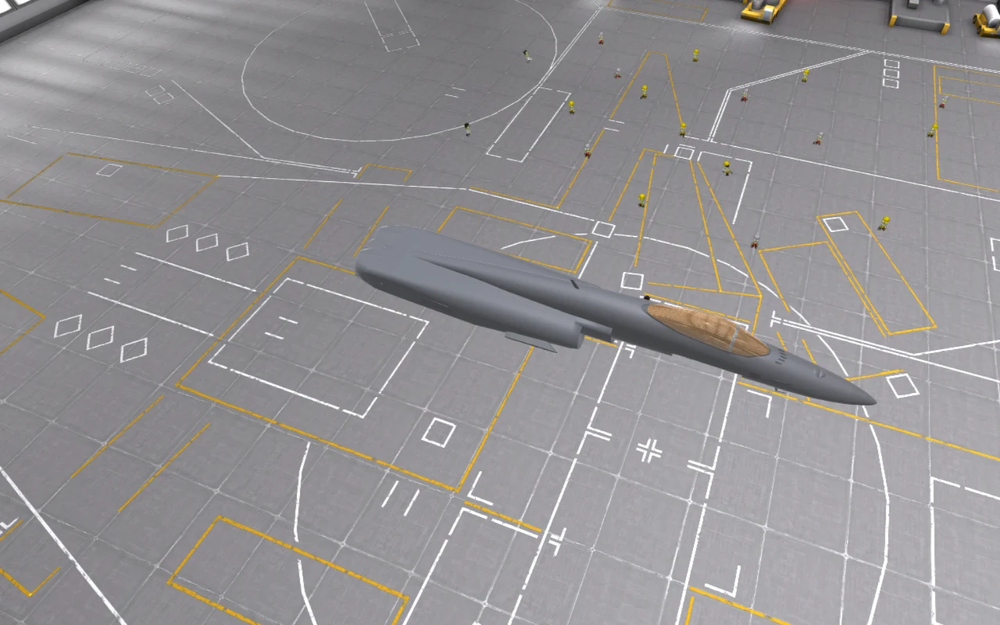
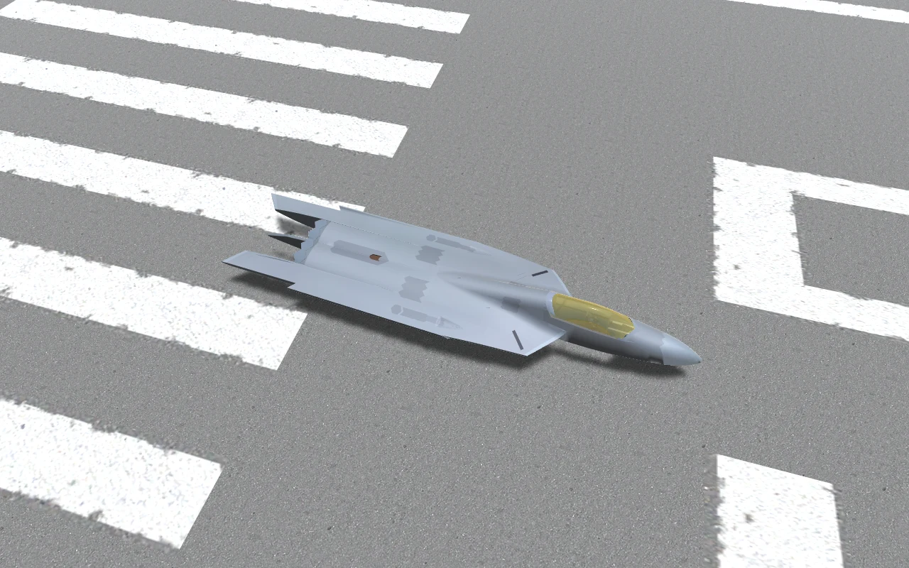
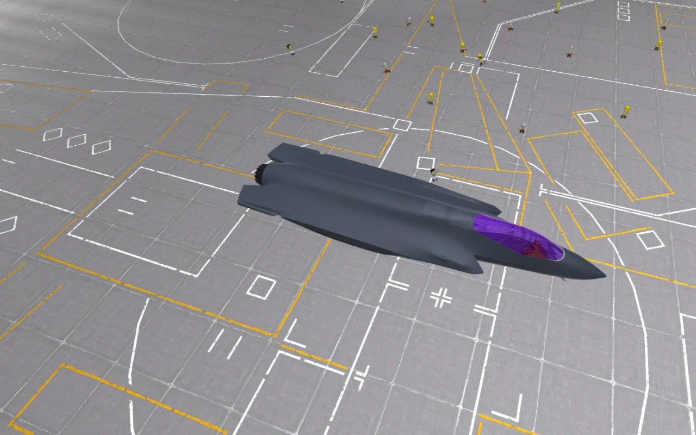

ShineFix home
← Back to supported mods
ColdJ's Military Planes
Optics verified
Human tested
Version 1.1.0
Compatibility evidence
Original screenshot gallery
Parts
F-14D Tomcat Body

F-18 Hornet Body

F22 Raptor Body

F35 Lightning 2 with Afterburner
